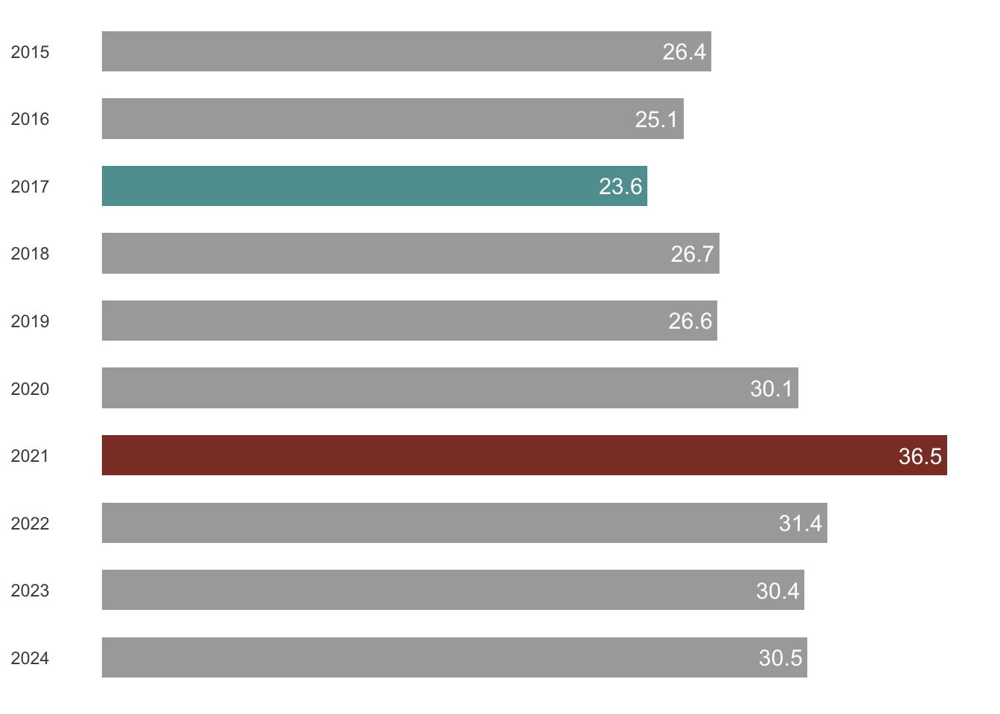
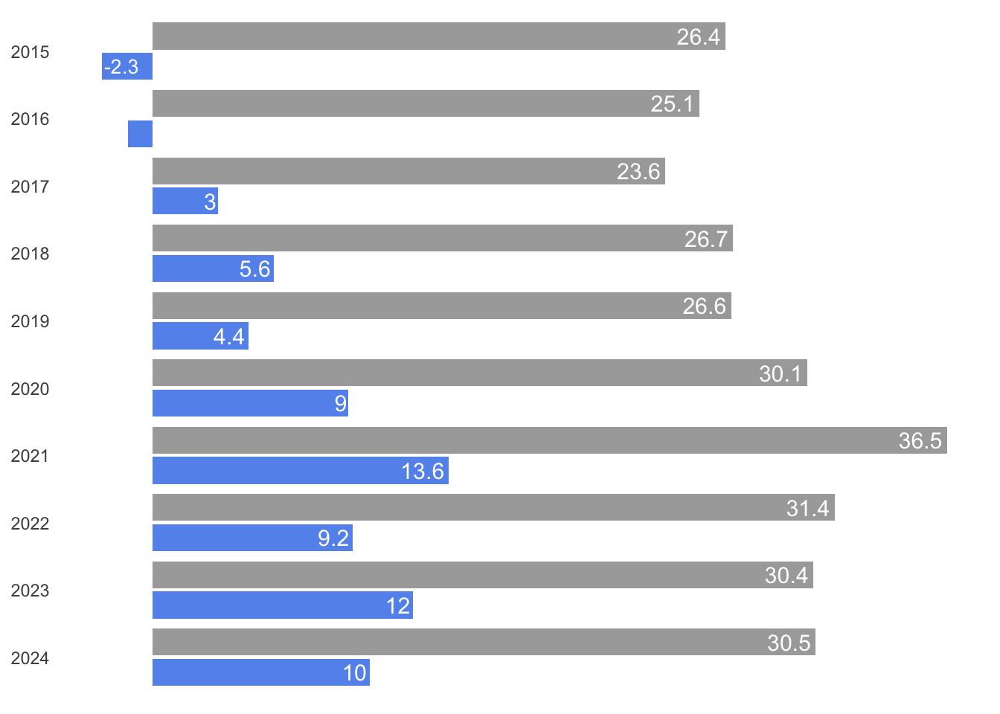

No hay mucha diferencia de calidad entre los colegios públicos y privados de Bogotá
En Bogotá, es común la creencia de que estudiar en un colegio privado es fundamental para tener una vida exitosa. Por eso, muchas familias consideran crucial elegir para sus hijos el mejor colegio que puedan pagar según sus restricciones económicas. Cada año varios padres están pendientes de que la prensa publique los rankings de los colegios privados que obtuvieron los mejores puntajes en las pruebas estandarizadas.
El afán por educar a los hijos en un colegio privado lleva a que las familias hagan grandes sacrificios económicos: los hogares de Bogotá gastan el 7.5% de sus ingresos en educación (SDP 2017). En comparación, el promedio de gasto en educación en los hogares de los países más desarrollados es del 1,5% (OCDE 2024b, pp2).
¿Por qué se asume que es imprescindible invertir en un colegio privado? Una opción perfectamente razonable sería estudiar en un colegio público y destinar esos recursos a otras experiencias educativas. Parte de la respuesta está en una percepción profundamente arraigada en Bogotá: se cree que la educación pública básica y media es de baja calidad, y que solo recurren a ella quienes no pueden costear otra opción. Esta idea no solo influye en las decisiones familiares, sino también en la política educativa, porque cerrar la brecha de calidad entre colegios públicos y privados es una meta de todas las administraciones. Pero, ¿qué tan grande es esa brecha? ¿Está realmente justificada la inversión en educación de las familias con una mayor calidad educativa?
Las pruebas Saber 11
{kind=link}
En Colombia, la prueba Saber 11 es el instrumento más consolidado para medir la calidad de la educación básica y media1. En 2024, más de 84.000 estudiantes que cursaban último año en los colegios de Bogotá presentaron esta evaluación. (En 2015 la presentaron aproximadamente 97.000, un 16% más que ahora, pero las razones de esa reducción son una historia diferente). De los 84.000 estudiantes que presentaron la prueba Saber 11 en 2024, el 44% estudiaron en colegios privados. Esta cifra es bastante alta comparada con el total de Colombia donde solo estudiaron en privados el 25% de los estudiantes que tomaron la prueba. Además, al comparar con las cifras de países más desarrollados la diferencia es todavía más grande: en promedio, el 18% de los estudiantes de países que pertenecen a la OCDE estudian en un colegio privado (OCDE 2024a, 2).
La diferencia entre colegios públicos y privados
Como mencionamos anteriormente, el alto porcentaje de familias que invierten en educación privada, en buena medida se basa en la percepción de que los colegios públicos son de baja calidad. Si nos guiamos exclusivamente por los resultados de las pruebas Saber 11, esa percepción parece confirmarse: la siguiente gráfica muestra la diferencia promedio en el puntaje de las pruebas Saber 11 entre colegios públicos y privados de Bogotá desde el año 2015 hasta el 2024.

En términos absolutos, la brecha de puntaje entre colegios privados y públicos ha sido constante en la última década. La diferencia más amplia se registró en 2021, durante el regreso parcial a clases presenciales tras la pandemia: en ese año, los colegios privados superaron a los públicos por un promedio de 36,5 puntos en una prueba cuyo puntaje máximo es 400. En ese año, los colegios privados de Bogotá obtuvieron en promedio 36.5 puntos más que los colegios privados, en una prueba cuyo puntaje máximo es 400. Para ponerlo en perspectiva, esto equivale a pasar de un 7,2 a un 6,3 en una escala de 0 a 10, una diferencia grande.
El peso del nivel socioeconómico
Sin embargo, aunque hay una diferencia grande en los puntajes promedio, es difícil determinar que la causa sea una diferencia de calidad entre colegios. Para empezar, la comparación no es equilibrada porque los estudiantes de colegios públicos tienen características diferentes a los estudiantes de colegios privados. Entre otras cosas, los estudiantes de colegios privados suelen tener:
Familias con mayores ingresos
Mejor alimentación y salud
Padres con más años de educación
Más oportunidades de aprendizaje fuera del aula
Aparte de estas diferencias entre estudiantes, los colegios privados se diferencian de los públicos porque pueden seleccionar a sus estudiantes. Esta selección es más rigurosa en los colegios con mayor prestigio, lo que crea un círculo virtuoso para ellos: sus buenos resultados refuerzan su reputación, lo que les permite atraer y escoger a los mejores candidatos. En buena parte, los colegios más prestigiosos obtienen buenos resultados porque solo admiten a los mejores estudiantes.
La diferencia cuando se comparan estudiantes similares
Para hacer una comparación rigurosa, sería necesario contrastar estudiantes con características similares, que solo difieran en haber estudiado en un colegio público o privado. Esto es prácticamente imposible, pero las pruebas Saber 11 permiten hacer una comparación más justa gracias a que miden el Índice Socioeconómico (INSE), un indicador construido a partir de datos sobre las condiciones del hogar de cada estudiante.
Efectivamente, al controlar los resultados de las pruebas por el nivel socioeconómico, la brecha entre colegios públicos y privados se reduce de forma significativa y en algunos años se invierte.

Como puede verse en la gráfica anterior, al comparar estudiantes con nivel socioeconómico similar, la brecha entre colegios públicos y privados se reduce entre 3 y 8 veces, aproximadamente. Por ejemplo, en el 2021 -el año con la mayor diferencia bruta-, la brecha pasó de 36,5 a 13,6 puntos al controlar por el INSE. Si la escala fuera de 0 a 10, esto equivale a una diferencia de 0,34 puntos. En contraste, en 2021, cada punto adicional en el INSE representó un aumento de 2.6 puntos en las pruebas Saber (el INSE tiene una escala de 0 a 100). Si miramos por componente, la diferencia entre públicos y privados fue amplia en inglés, pero mínima en ciencias naturales y matemáticas.
En algunos años, incluso, la comparación controlada cambia la dirección de la brecha. Al tener en cuenta el índice socioeconómico de los estudiantes, en 2015 y 2016 la brecha se invierte y la diferencia de puntaje en las pruebas Saber 11 favorece a los colegios públicos.
| Año | Diferencia entre colegios públicos y privados | Diferencia teniendo en cuenta el INSE |
| 2015 | 26.4 | −2.3 |
| 2016 | 25.1 | −1.1 |
| 2017 | 23.6 | 3.0 |
| 2018 | 26.7 | 5.6 |
| 2019 | 26.6 | 4.4 |
| 2020 | 30.1 | 9.0 |
| 2021 | 36.5 | 13.6 |
| 2022 | 31.4 | 9.2 |
| 2023 | 30.4 | 12.0 |
| 2024 | 30.5 | 10.0 |
El valor negativo de las celdas en negrilla de la tabla anterior significa que en esos años los colegios públicos de Bogotá obtuvieron un puntaje mayor en las pruebas Saber luego de controlar por el Índice socioeconómico. Por ejemplo, en 2015, estudiar en un colegio público de Bogotá tuvo en promedio como efecto 2.3 puntos más en las pruebas Saber.
No es una sorpresa
Esta realidad bogotana se repite en el resto del mundo. Si vemos las comparaciones que hacen en las pruebas internacionales PISA, cuando se tienen en cuenta los niveles socioeconómicos de los estudiantes no hay diferencias en el desempeño entre colegios públicos y privados (OCDE 2024a, 6).
¿Por qué sucede esto? En teoría, los colegios privados tienen ventajas como una mayor libertad para conservar únicamente a docentes que tengan buen desempeño. Además la presión por “competir” con otros colegios debería llevarlos a ofrecer una mejor educación. Sin embargo, el “mercado de la educación” es atípico: es complejo para los padres identificar la calidad real de un colegio, los incentivos no siempre están alineados con brindar una mejor calidad educativa, y no es fácil cambiar de colegio cuando alguien no está satisfecho.
Por otro lado, no todos las ventajas están del lado de los colegios privados. En el caso de Bogotá y Colombia, salvo poquísimas excepciones, la remuneración que reciben los docentes que trabajan en el sector público es mucho mayor a la que reciben los docentes de colegios privados. Por esta razón, el proceso de selección de docentes en el sector público es muy competivo y lleva a que cuenten con docentes de muy altas capacidades.
Un problema ignorado: la segregación
Un efecto menos discutido del predominio de la educación privada es la segregación. Como advirtió Andreas Schleicher, director de Educación de la OCDE, refiriéndose a Colombia en una entrevista con la revista Semana:
“aunque no exista una diferencia educativa sustancial, los colegios privados están captando a las familias con mayores recursos y dividiendo a la sociedad”2.
En efecto, aunque la participación del sector privado enriquece ciertos aspectos del sistema educativo, también puede contribuir a profundizar la segregación social. Algo así sucede en Bogotá, donde es normal la creencia de que la educación pública es solo para quienes no pueden pagar otra opción. La distribución de los colegios públicos de Bogotá confirma que más allá de la percepción se trata de un tema estructural. En el siguiente mapa puede verse cómo la oferta de educación pública está ubicada en solo algunos sectores de la ciudad.
{kind=link}
La imagen lleva la capa Manzana Estratificación Año 2019 y la capa Colegios (filtrada para que solo aparezcan los colegios públicos).
La ubicación de los colegios públicos está marcada con chinchetas. Las zonas de Bogotá de nivel socioeconómico alto están coloreadas con tonalidades amarilla y verde, y las zonas de nivel socioeconómico bajo están coloreadas con tonalidades naranja, rojo y violeta.
En las zonas de mayor nivel socieconómico de Bogotá prácticamente no existen colegios públicos. Esta situación, no es normal en lo absoluto. Por ejemplo, en muchas ciudades de Estados Unidos o Europa, es común encontrar colegios públicos en todos los barrios, sin importar el ingreso promedio de sus habitantes3.
Esta segregación espacial contribuye a reforzar el estigma que pesa sobre la educación pública. Si tuvieran un colegio público en su barrio, ¿cuántas familias de Bogotá dejarían de pagar educación privada? La diferencia de calidad no es tan grande como se cree, y el ahorro económico sería considerable. Además, se reducirían los largos desplazamientos diarios de estudiantes —y con ellos, parte de la congestión vehicular que afecta a toda la ciudad.
Concentrar la educación pública exclusivamente en los sectores de menos ingresos puede entenderse como un uso más eficiente de los recursos públicos. Pero esa eficiencia tiene un costo social: limita la posibilidad de que la escuela pública funcione como un espacio de integración, convivencia entre diferentes clases sociales y formación de ciudadanía.
Cárdenas, García Villegas y Fergusson en su libro “La quinta puerta”(2021) señalan que cuando los estudiantes relativamente más pobres solo estudian con otros que también son pobres, se reducen las oportunidades de aprender entre pares, ampliar el capital cultural y establecer redes de contacto. Al mismo tiempo, para los estudiantes de familias acomodadas, el contacto con compañeros de contextos más difíciles contribuye a desmontar prejuicios, fortalece la conciencia social y ayuda a comprender mejor el país en el que viven. En ese sentido, la separación de estudiantes según el nivel socioeconómico dificulta la inclusión y debilita el tejido social. En lugar de ayudar a cerrar las brechas, la educación termina replicando la desigualdad de la ciudad.
Referencias
Notas
Se trata de una evaluación estandarizada que deben tomar los estudiantes al terminar la escuela. La prueba Saber 11 tiene cinco componentes: lectura crítica, matemáticas, ciencias naturales, ciencias sociales e inglés. Cada uno de estos componentes se evalúa de 0 a 80, por lo que el puntaje máximo de la prueba es 400. Aparte de ser un instrumento para medir la calidad de educación, la prueba Saber 11 se utiliza como un instrumento de selección: muchas universidades tienen en cuenta el puntaje en esta prueba para admitir a sus futuros estudiantes.↩︎
¿Cómo ve la OCDE la educación en Colombia?. Revista semana, 2018. Enlace↩︎
Un ejemplo es este mapa de las escuelas públicas de Beverly Hills y Bel Air en Los Angeles: Enlace.↩︎
{kind=link}